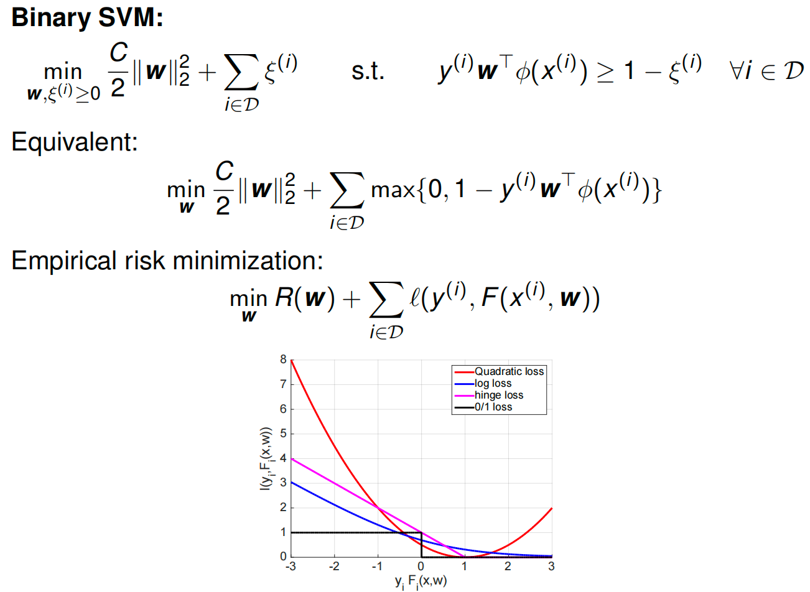

ECE 544 Pattern Recognition¶
约 4022 个字 5 张图片 预计阅读时间 13 分钟
Pattern Recognition¶
Pattern recoginition
- input data: x
- Label/output: y
- x^(i)^ -> model/algorithm -> y^(i)^ ---inference/prediction
- y=y^(k)^ where k= arg min || x(i)-x||^2=argmin d(x(i)-x)
argmin (argument of the minimum) finds the input value(s) that produce the minimum output of a function, rather than the minimum output itself
K Nearest Neighbor
Linear Regression¶
线性回归
norm
transpose
Expectation: \(E_{p(y)[f(y)]}=\sum_{y_i}p(y)f(y)\)
arg min
Model: y=w_1\times x+w_2
Error: vertical lines
Set the derivative to zero
Regularization
w ∗ = XX ⊤ + CI −1 XY
Higher Po
Maximize the likelihood of the given dataset \(D = \{(x(i) , y(i) )\}\) assuming
samples to be drawn independently from an identical distribution
(i.i.d.).
IID? independent identical d
Joint distribution = product of individual distributions
- not good for classification
Logistic Regression¶
empirical risk minimization

Log(1)
Edge/Boundary detection
[!NOTE]
Which loss is used for logistic regression?
What is the difference between logistic and linear regression?
How to optimize linear and logistic regression?
Optimization Primal¶
When can we find the optimum?
-
Least squares, linear, and convex programs can be solved
efficiently and reliably
Convex set: A set is convex if for any two points w1, w2 in the set, the line segment \(λw_1 + (1 − λ)w_2\) for λ ∈ [0, 1] also lies in the set.
Convex function A function f is convex if its domain is a convex set, and for any points w1, w2 in the domain and any λ ∈ [0, 1] \(f((1 − λ)w1 + λw2) ≤ (1 − λ)f(w1) + λf(w2)\)
Show that \(log(1 + e^x)\) is convex for x ∈ R
convex optimization
Gradient descent
[!NOTE]
Stepsize/Learning rate rules?
Descent directions?
Properties of convex functions?
Convergence rates?
Improvements?
Important topics of this lecture
Convex optimization basics
Algorithm choices
Rates
Optimization Dual¶
Lagrangian
Recipe for computing dual program:
-
Bring primal program into standard form
-
Assign Lagrange multipliers to a suitable set of constraints
- Subsume all other constrains in W
- Write down the Lagrangian L
- Minimize Lagrangian w.r.t. primal variables s.t. w ∈ W
Karush-Kuhn-Tucker (KKT) conditions
The Relationship: Primal vs. Dual
The relationship is built on the inequality you saw earlier:
- The Primal Program minimizes the cost directly (finding the lowest valley).
- The Dual Function \(g(\lambda)\) finds a lower bound for that cost (finding the highest possible "floor" beneath the valley).
- The Dual Program is simply the search for the best (highest) lower bound. It asks: "What is the largest possible value for this floor?"
Walkthrough: The Linear Program Example
Let's trace the steps in the slide to see how we get from the Primal to the Dual.
Step 1: The Primal Problem
We start with a standard linear minimization:
Step 2: The Lagrangian
We add the constraint to the objective using a Lagrange multiplier \(\lambda\) (where \(\lambda \ge 0\)).
Step 3: Regroup terms by \(\mathbf{w}\)
To find the minimum with respect to \(\mathbf{w}\), we need to group all terms containing \(\mathbf{w}\) together.
- Here, \((\mathbf{c} + \mathbf{A}^T \lambda)\) acts like the slope of a line.
- \(-\mathbf{b}^T \lambda\) acts like the intercept (constant with respect to \(\mathbf{w}\)).
Step 4: Minimize \(L\) to find \(g(\lambda)\)
We need to find \(\min_{\mathbf{w}} L(\mathbf{w}, \lambda)\). This is the tricky part shown in the middle of the slide.
Think of this as minimizing a simple line \(y = mx + b\).
- Case A: If the slope \(m\) is not zero (i.e., \(\mathbf{c} + \mathbf{A}^T \lambda \neq 0\)), we can choose \(\mathbf{w}\) to be huge and negative (or positive), making the total value go to \(-\infty\).
- Case B: If the slope \(m\) is zero (i.e., \(\mathbf{c} + \mathbf{A}^T \lambda = 0\)), the \(\mathbf{w}\) term disappears completely. The value is just the intercept: \(-\mathbf{b}^T \lambda\).
So, the dual function \(g(\lambda)\) is:
Step 5: The Dual Program
The Dual Program tries to maximize \(g(\lambda)\).
Since we want to maximize something, we can ignore the case where it equals \(-\infty\) (that's definitely not the maximum!). We only care about the case where the slope is zero.
Thus, the Dual Program becomes:
Summary
The Lagrangian allowed us to convert a minimization problem over \(\mathbf{w}\) (Primal) into a maximization problem over \(\lambda\) (Dual).
- Primal: Constraints were on \(\mathbf{w}\) (\(\mathbf{Aw} \le \mathbf{b}\)).
- Dual: Constraints are on the "slope" being zero (\(\mathbf{A}^T \lambda + \mathbf{c} = 0\)).
[!NOTE]
What to do before computing the Lagrangian?
How to obtain the dual program?
Why duality
Support Vector Machines¶
SVMs
SVM: Finds the optimal line (hyperplane) that separates the classes with the maximum margin.

The graph shows data points from two classes (crosses \(\times\) and circles \(\circ\)) in a 2D feature space (\(\phi_1, \phi_2\)).
- The Solid Line (\(\mathbf{w}^T \phi = 0\)): This is the Decision Boundary. It effectively separates the two classes.
- The Dashed Lines (\(\mathbf{w}^T \phi = 1\) and \(-1\)): These represent the edges of the "street" (or margin). The SVM requires all data points to be outside these lines.
- The Support Vectors: Notice that only a few points (two crosses and one circle) actually touch the dashed lines. These are the "Support Vectors" that define the model.
- The Margin Width (\(\frac{2}{\|\mathbf{w}\|}\)): The diagram labels the distance between the two dashed lines as \(\frac{2}{\|\mathbf{w}\|}\). This is the "safety gap" between the classes.
The Mathematical Goal
The goal of SVM is to make this safety gap (margin) as wide as possible.
-
Maximize Margin: We want to maximize \(\frac{2}{\|\mathbf{w}\|}\).
-
Minimize Norm: Mathematically, maximizing \(\frac{2}{\|\mathbf{w}\|}\) is the same as minimizing \(\|\mathbf{w}\|\) (the length of the weight vector).
-
The Formula: To make the calculus easier, we square it and add a fraction. So, the objective becomes:
\[\min_{\mathbf{w}} \frac{1}{2} \|\mathbf{w}\|_2^2\]This is what you see in the "Maximize margin" section of the slide.
The Constraints (The Rules)
We can't just minimize \(\|\mathbf{w}\|\) to zero (which would make the margin infinite but classify nothing). We must respect the data.
This inequality (labeled "Taskloss: \(L\)") enforces two things:
- Correct Classification: The prediction must have the same sign as the label \(y\).
- Safety Distance: The prediction value must be at least 1 (or \(-1\)). This ensures points don't just "barely" cross the line, but stay completely off the "street."
[!NOTE]
"Issue: what if data not linearly separable?".
- The model shown here (Hard Margin SVM) crashes if you have a single data point in the wrong crowd (e.g., a blue circle in the middle of the black crosses).
- This hints at the next topic in your course: Soft Margin SVM, which introduces "slack variables" to allow for some errors.
Slack

Maximum and constraints
Dual variables \(α (i) ≥ 0\) for each inequality constraint
Step 1: Minimize w.r.t. the Weights (\(\mathbf{w}\)) 第一步：减少权重 \(\mathbf{w}\)
We want to find the \(\mathbf{w}\) that minimizes \(L\). We take the derivative with respect to \(\mathbf{w}\) and set it to zero. 我们想找到 \(\mathbf{w}\) 使 \(L\) 最小化的 。我们取导数， \(\mathbf{w}\) 并将其设为零。
-
Lagrangian terms with \(\mathbf{w}\): \(\frac{C}{2}\|\mathbf{w}\|_2^2 - \mathbf{w}^T \sum_i \alpha^{(i)} y^{(i)} \phi(x^{(i)})\) 拉格朗日项为 \(\mathbf{w}\) ： \(\frac{C}{2}\|\mathbf{w}\|_2^2 - \mathbf{w}^T \sum_i \alpha^{(i)} y^{(i)} \phi(x^{(i)})\)
-
Derivative: 衍生品：
\[\frac{\partial L}{\partial \mathbf{w}} = C\mathbf{w} - \sum_{i} \alpha^{(i)} y^{(i)} \phi(x^{(i)}) = 0\] -
Result (Solution for \(\mathbf{w}\)): 结果（解 ）： \(\mathbf{w}\)
\[\mathbf{w} = \frac{1}{C} \sum_{i} \alpha^{(i)} y^{(i)} \phi(x^{(i)})\](This tells us that the weight vector is just a linear combination of the data points.) （这告诉我们权重矢量只是数据点的线性组合。）
Step 2: Minimize w.r.t. the Slack Variables (\(\xi\)) 步骤 2：最小化松弛变量 \(\xi\)
Now we look at the terms involving \(\xi^{(i)}\). 现在我们来看涉及 \(\xi^{(i)}\) 的项。
-
Lagrangian term: \(\sum_i \xi^{(i)} (1 - \alpha^{(i)})\) 拉格朗日项： \(\sum_i \xi^{(i)} (1 - \alpha^{(i)})\)
-
Analysis: Since \(\xi^{(i)} \ge 0\) (from the primal constraints), we need to be careful. 分析： 由于 \(\xi^{(i)} \ge 0\) （从原始约束中），我们需要谨慎。
-
If the coefficient \((1 - \alpha^{(i)})\) is negative, we could make \(\xi^{(i)}\) huge and drive \(L\) to \(-\infty\). Since we want a valid minimum, this is not allowed. 如果系数 \((1 - \alpha^{(i)})\) 为负，我们可以将 变 \(\xi^{(i)}\) 为巨大并驱动 \(L\) 到 \(-\infty\) 。因为我们想要一个有效的最低值，所以这是不允许的。
-
Therefore, we get a constraint on \(\alpha\): 因此，我们得到 的 \(\alpha\) 约束 ：
\[1 - \alpha^{(i)} \ge 0 \implies \alpha^{(i)} \le 1\] -
Combined with \(\alpha^{(i)} \ge 0\) (standard dual constraint), we get the "Box Constraint": \(0 \le \alpha^{(i)} \le 1\). 结合 \(\alpha^{(i)} \ge 0\) （标准对偶约束），我们得到“盒子约束”： \(0 \le \alpha^{(i)} \le 1\) 。
-
At the optimal point, this term \(\xi^{(i)}(1-\alpha^{(i)})\) will vanish (be zero). 在最优点，该项 \(\xi^{(i)}(1-\alpha^{(i)})\) 将消失（为零）。
-
Step 3: Substitute Back (The "Dual Objective") 第三步：回归替代（“双重目标”）
Now, plug the solution for \(\mathbf{w}\) (from Step 1) back into the Lagrangian equation to eliminate \(\mathbf{w}\). 现在，将（步骤 1 中的）解 \(\mathbf{w}\) 代入拉格朗日方程以消除 \(\mathbf{w}\) 。
Combine the squared terms (\(\frac{1}{2C} - \frac{1}{C} = -\frac{1}{2C}\)): 将平方项（2C）组合 1 − C 1 =− 2C 1 ):
Final Result 最终结果
The problem reduces to maximizing this new formula solely with respect to \(\alpha\): 问题简化为仅对 最大化 \(\alpha\) 该新公式：
Subject to: 受限于：
- \(0 \le \alpha^{(i)} \le 1\)
- \(\sum \alpha^{(i)} y^{(i)} = 0\) (This usually comes from optimizing the bias \(b\), though implicit in your specific slide formulation). \(\sum \alpha^{(i)} y^{(i)} = 0\) （这通常通过优化偏置 \(b\) ，尽管在你的具体幻灯片表述中隐含了这一点。）

[!NOTE]
What are convenient properties of the SVM dual program?
Relationship between logistic regression and binary SVM?
How to extend all discussed formulations to more than two classes?

SVM as 0-temperature limit of logistic regression
Multiclass Classification and Kernel Methods¶
Multiclass classification: How to classify between K classes?
- 1 vs all or 1 vs rest classifier: Use K − 1 classifiers, each solving a two class problem whichseparates a point in class k from point not in this class ==> more than one good answer or no good answer
- 1 vs 1 classifier: Use K(K − 1)/2 two-way classifiers, one for each possible pair of classes ==> two-way preferences need not be transitive
Tie-breaking is difficult, neither of the methods are good
-
Use a multinomial distribution over y ∈ {0, 1, . . . , K − 1}. Use K weight vectors w(y)
\(p(y=k|x^{(i)})=\frac{exp(w^{T}_{(k)}\sigma(x^{(i)}))}{\sum_{j ∈ {0, 1, . . . , K − 1}}exp(w^{T}_{(j)}\sigma(x^{(i)}))}\)
flow matching on MNIST
Discrete flow matching
Binary logistic regression class 0 and 1 with guassian mean -2 and 2
SVM: support vector machine
Multiclass SVM¶
linear decision boundary $$ \min_{\mathbf{w}} \frac{C}{2} |\mathbf{w}|2^2 + \sum) $$ }} \epsilon \ln \sum_{\hat{y}} \exp \left( \frac{L(y^{(i)}, \hat{y}) + \mathbf{w}^T \psi(x^{(i)}, \hat{y})}{\epsilon} \right) - \mathbf{w}^T \psi(x^{(i)}, y^{(i)\(\mathbf{w}\)：权重向量。
\(C\)：正则化参数。
\(\mathcal{D}\)：数据集。
\(\epsilon\)：温度参数 (Temperature)。
\(L(y^{(i)}, \hat{y})\)：损失函数（Task Loss）
\(\psi(x, y)\)：特征映射函数
- 公式的核心：Softmax 平滑近似
公式中最复杂的那一部分（\(\epsilon \ln \sum \exp \dots\)）其实是一个数学上非常有名的函数，叫做 Log-Sum-Exp。
在物理学和机器学习中，\(\epsilon\) 被称为温度 (Temperature)。它的作用是控制函数的“硬度”：
- 当 \(\epsilon \to 0\)（温度趋近于 0）时：Log-Sum-Exp 会变成 Max (最大值) 函数。
- 就好比水结冰了，变成了硬邦邦的固体（Hard Max）。
- 当 \(\epsilon = 1\)（温度较高）时：它保持平滑，保留了所有可能性的概率分布（Soft Max）。
- 推导一：变身成 SVM (\(\epsilon \to 0\))
让我们看看当温度 \(\epsilon\) 变得非常非常小（趋近于 0）时，公式会发生什么。
-
原理：\(\lim_{\epsilon \to 0} \epsilon \ln \sum \exp(\frac{A}{\epsilon}) \approx \max(A)\)。
-
代入公式：
\[\epsilon \ln \sum_{\hat{y}} \exp \frac{L + \mathbf{w}^T \psi}{\epsilon} \quad \xrightarrow{\epsilon \to 0} \quad \max_{\hat{y}} (L(y, \hat{y}) + \mathbf{w}^T \psi(x, \hat{y}))\] -
结果：这正好就是 PPT 上半部分写的 Multi-class SVM 的公式（Hinge Loss）！
- 这里的 \(L(y, \hat{y})\) 通常就是那个 \(1\)（Margin），代表如果预测错了要惩罚多少。
- 结论：SVM 其实就是“低温”极限下的逻辑回归。它只关心那个最大的得分（最硬的边界），忽略其他的。
- 推导二：变身成逻辑回归 (\(\epsilon = 1\))
让我们看看当温度 \(\epsilon = 1\) 时，公式会发生什么。我们假设这是标准的逻辑回归（没有额外的边界惩罚 \(L=0\)）。
-
代入公式：
\[1 \cdot \ln \sum_{\hat{y}} \exp \left( \frac{0 + \mathbf{w}^T \psi(x, \hat{y})}{1} \right) - \mathbf{w}^T \psi(x, y)\]\[= \ln \left( \sum_{\hat{y}} \exp(\mathbf{w}^T \psi(x, \hat{y})) \right) - \mathbf{w}^T \psi(x, y)\] -
这是什么？ 这正是 负对数似然函数 (Negative Log-Likelihood)，也就是逻辑回归用来优化的 交叉熵损失 (Cross-Entropy Loss)。
- 第一项是配分函数（归一化项，\(Z\)）的对数。
- 第二项是正确类别的得分。
- 结论：逻辑回归是“常温”下的模型。它考虑了所有类别的得分，计算出一个概率分布。
这个公式建立了一个连续的光谱：
- 光谱的一端 (\(\epsilon \to 0\)) 是 SVM：它是“硬”的，只在乎最强的那个对手（Support Vectors），计算的是几何间隔。
- 光谱的另一端 (\(\epsilon = 1\)) 是 逻辑回归：它是“软”的，考虑全局的概率分布，计算的是概率似然。
一句话概括： SVM 只是逻辑回归在温度冷却到 0 度时的特例。
Binary logistic regression/SVM is convex 凸的
\(\phi\)
Kernels¶
第一部分：那四个公式是怎么来的？
这四个公式分为两组：训练用的（Dual）*和*预测用的（Prediction）。它们的核心来源都是我们在前面提到的 拉格朗日乘数法。
1. 预测公式 (Prediction with dual variables)¶
-
这是什么？ 这是告诉你，一旦模型训练好了，怎么用它来预测新数据。
-
怎么推导的？
还记得在求拉格朗日极值时，我们对 \(\mathbf{w}\) 求导并令其为 0 吗？
\[\frac{\partial L}{\partial \mathbf{w}} = 0 \implies \mathbf{w} = \sum \alpha_i y_i \phi(x_i)\]这个式子被称为 表示定理 (Representer Theorem)。它告诉我们：最佳的权重向量 \(\mathbf{w}\) 其实就是所有训练数据点 \(\phi(x_i)\) 的线性组合（加权和）。
所以，当我们预测新数据 \(\phi(x)\) 时，原本是计算 \(\mathbf{w}^T \phi(x)\)，现在把 \(\mathbf{w}\) 替换掉，就变成了公式里的样子：新数据与所有旧数据的内积的加权和。
2. 对偶问题公式 (Dual of SVM / Logistic)¶
-
这是什么？ 这是训练阶段真正要解的数学题。
-
怎么推导的？
这就是我们在前几张 PPT 里做的“代回”步骤。
既然我们知道 \(\mathbf{w}\) 可以用 \(\alpha\)（或 \(\lambda\)）表示，我们就把 \(\mathbf{w}\) 的表达式代回到原本的拉格朗日函数 \(L\) 中。
这样一来，式子里就没有 \(\mathbf{w}\) 了，只剩下对偶变量 \(\alpha\) 和数据点之间的内积。
-
观察点：
你会发现 Logistic Regression 和 SVM 的对偶公式长得非常像。它们都依赖于数据点的内积。区别仅在于约束条件和具体的系数（因为它们的 Loss Function 不同，一个是 Log Loss，一个是 Hinge Loss）。
第二部分：后面的 Kernel 相关是在干什么？
既然我们有了上面的四个公式，数学家们发现了一个惊人的“漏洞”（或者说捷径），这就是 核技巧 (Kernel Trick)。
1. 观察到的现象 (Observation)¶
请看上一张图的四个公式，不管是训练（Dual）还是预测（Prediction），所有的计算都只涉及数据向量之间的内积：
也就是说，我们根本不需要单独知道 \(\phi(x)\) 长什么样，我们只需要知道两个数据点“乘起来”是多少。
2. 为什么要用 Kernel？¶
假设我们的数据在低维空间不可分，我们需要把它映射到高维空间（比如 100万维）才能分开。
-
笨办法（不用 Kernel）：
- 先把 \(x\) 映射成 100万维的向量 \(\phi(x)\)。（计算量爆炸）
- 再计算这两个 100万维向量的内积。（计算量再次爆炸）
-
聪明办法（Kernel Trick）：
我们发现有一个函数 \(K(x, z)\)，它在低维直接算出来的结果，刚好等于那个高维内积的结果。
\[K(x, z) = \phi(x)^T \phi(z)\]这样我们就可以不用去计算那个复杂的 \(\phi(x)\)，直接在低维算个 \(K\) 就行了。
3. 总结¶
- Kernel 是什么？ 它是一个计算捷径。
- Advantage (优势)： 不需要显式地构建特征向量 \(\phi(x)\)。省内存、省时间，还能解决非线性问题。
- But (但是)： 不是随便找个函数都能当 Kernel，它必须满足数学条件（Mercer's Theorem），保证它对应某个特征空间里的内积。
一句话总结这两张图的逻辑：
第一张图推导出公式，证明了“只要算出内积就能训练和预测”；第二张图接着说“既然只要内积，那我们就用 Kernel 函数来偷懒，直接算出内积，从而轻松实现高维映射”。
Linear kernel:
Squared exponential (Gaussian) kernel:
Sigmoid kernel:
New kernels:
[!NOTE]
How to extend binary classification to multiple classes?
What are kernels good for?
Deep Nets¶
Deep Learning
AlexNet
Decreasing spatial resolution and the increasing number of channels
Fully connected layer¶
One particular output is influenced by all the other inputs: wx+b
What’s an issue with fully connected layers?
How to share weights?
评论区~
有用的话请给我个赞和 star =>